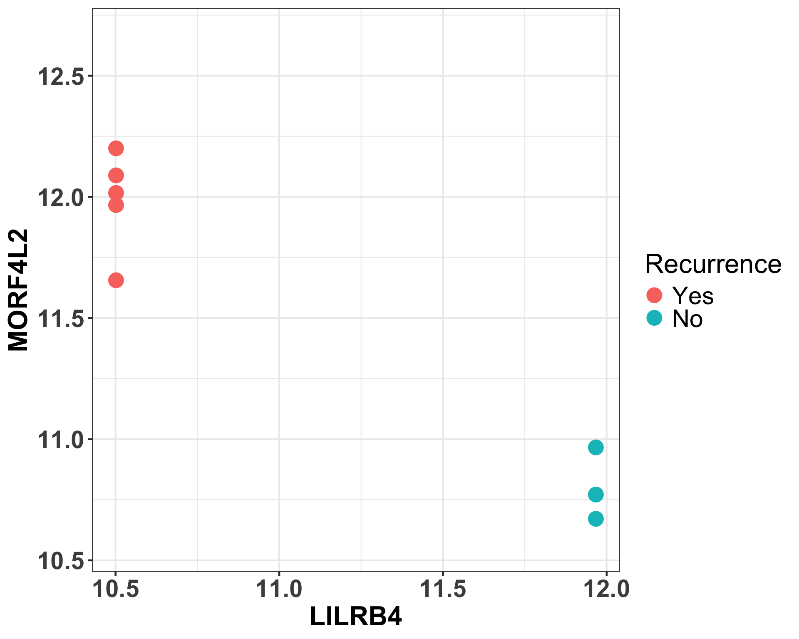
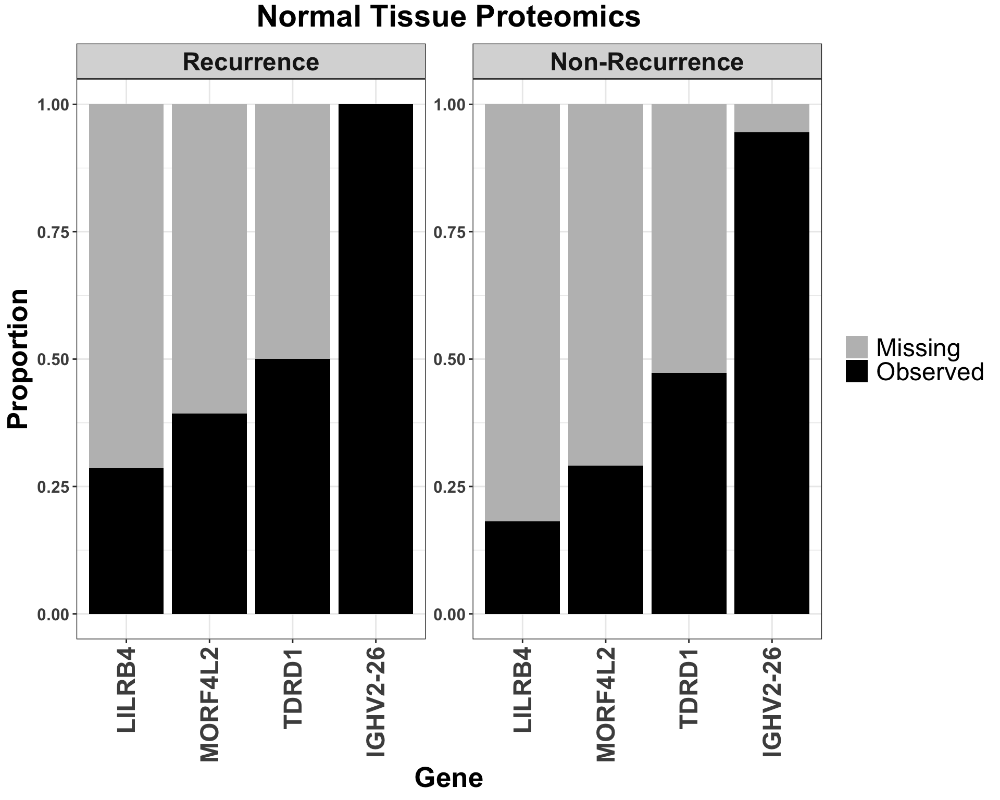
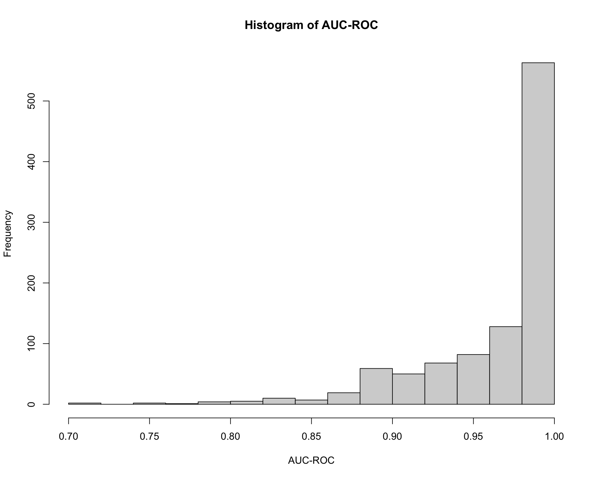
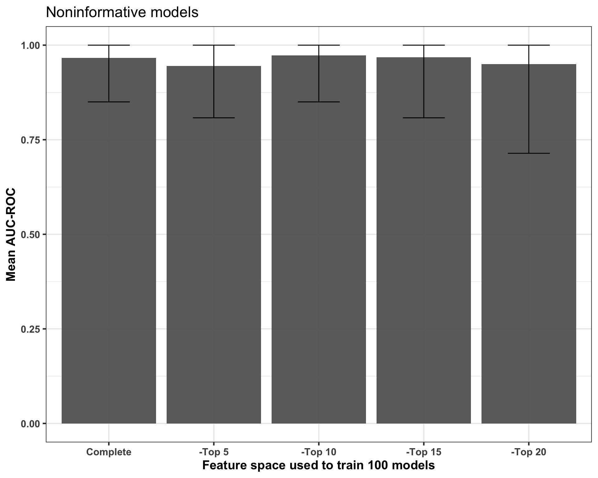

Feature selection: Machine learning models
Qian-Wu Liao
Last updated: 2024-05-15
Checks: 6 1
Knit directory: SMART-CARE_LungCancer/
This reproducible R Markdown analysis was created with workflowr (version 1.7.1). The Checks tab describes the reproducibility checks that were applied when the results were created. The Past versions tab lists the development history.
Great! Since the R Markdown file has been committed to the Git repository, you know the exact version of the code that produced these results.
Great job! The global environment was empty. Objects defined in the global environment can affect the analysis in your R Markdown file in unknown ways. For reproduciblity it’s best to always run the code in an empty environment.
The command set.seed(20230425) was run prior to running
the code in the R Markdown file. Setting a seed ensures that any results
that rely on randomness, e.g. subsampling or permutations, are
reproducible.
Great job! Recording the operating system, R version, and package versions is critical for reproducibility.
Nice! There were no cached chunks for this analysis, so you can be confident that you successfully produced the results during this run.
Using absolute paths to the files within your workflowr project makes it difficult for you and others to run your code on a different machine. Change the absolute path(s) below to the suggested relative path(s) to make your code more reproducible.
| absolute | relative |
|---|---|
| /Users/qianwu/Desktop/SMART-CARE_LungCancer | . |
Great! You are using Git for version control. Tracking code development and connecting the code version to the results is critical for reproducibility.
The results in this page were generated with repository version 9a5191e. See the Past versions tab to see a history of the changes made to the R Markdown and HTML files.
Note that you need to be careful to ensure that all relevant files for
the analysis have been committed to Git prior to generating the results
(you can use wflow_publish or
wflow_git_commit). workflowr only checks the R Markdown
file, but you know if there are other scripts or data files that it
depends on. Below is the status of the Git repository when the results
were generated:
Ignored files:
Ignored: .DS_Store
Ignored: .RData
Ignored: .Rhistory
Ignored: analysis/.DS_Store
Ignored: code/.DS_Store
Ignored: data/.DS_Store
Ignored: output/.DS_Store
Untracked files:
Untracked: analysis/CrossCohort_investigation_EXP.Rmd
Untracked: code/archive/
Untracked: code/comparison_funcs.R
Untracked: code/dataset_list.R
Untracked: code/workflowr_commands.R
Untracked: data/Discovery/
Untracked: data/MethodDev/
Untracked: data/aliquot_metadata.xlsx
Untracked: data/patient_metadata.xlsx
Untracked: data/sample_metadata.xlsx
Untracked: output/Discovery/
Untracked: output/MethodDev/
Untracked: output/SC_meeting/
Note that any generated files, e.g. HTML, png, CSS, etc., are not included in this status report because it is ok for generated content to have uncommitted changes.
These are the previous versions of the repository in which changes were
made to the R Markdown (analysis/FeatSelection_ML.Rmd) and
HTML (docs/FeatSelection_ML.html) files. If you’ve
configured a remote Git repository (see ?wflow_git_remote),
click on the hyperlinks in the table below to view the files as they
were in that past version.
| File | Version | Author | Date | Message |
|---|---|---|---|---|
| Rmd | 9a5191e | LiaoQianWu | 2024-05-15 | Update analysis report |
| Rmd | b83f673 | LiaoQianWu | 2024-05-15 | Just for quick update of analysis report webpage |
| Rmd | c670593 | LiaoQianWu | 2024-04-30 | Write functions for repetitive tasks and play around with logistic regression model |
| Rmd | 67817ea | LiaoQianWu | 2024-03-06 | Train XGBoost and lasso logistic regression models on combined Klin. normal tissue DIA proteomics and tidy up code for analysis of combined proteomics data |
| Rmd | b608341 | LiaoQianWu | 2024-01-26 | Train RF models and do feature selection |
Description: Do feature selection using machine learning models (e.g., random forest) trained on combined data of cohorts to identify potential biomarkers for predicting lung cancer recurrence.
Load libraries
library('spsUtil')
library('randomForest')
library('missForest')
library(xgboost)
library('caret')
library('glmnet')
library('SummarizedExperiment')
library('tidyverse')
# Load user-defined functions
source('./code/misc.R')
source('./code/ml_funcs.R')
# Set plot theme
th <- theme_bw(base_size = 15) +
theme(axis.title = element_text(face = 'bold'),
axis.text = element_text(face = 'bold'),
axis.ticks = element_line(linewidth = 0.8),
legend.text = element_text(size = 15))NTP (AG Klin.)
Normal Tissue DIA Proteomics from AG Klingmüller
RF
Average model performance (Uncorrelated significant features, iter = 1000)
# Load RF training results
rfRes <- readRDS('./data/Discovery/rf/rfResSig_proNormal_randSplit_1000_Klin.rds')
# Report summarized scores
trainedModels <- rfRes$rfRes$rfRes
# Prepare predictions and ground truths
pred <- as.list(rep(NA, length(trainedModels)))
for (i in seq_len(length(trainedModels))) {
pred[[i]] <- trainedModels[[i]]$test$predicted
}
truth <- rfRes$rfRes$y_test
auc_roc <- rfRes$rfRes$auc_roc
summarizePredPower(pred, truth, auc_roc)Mean AUC-ROC score: 0.875
95% CI: [0.5625, 1]
Top important features with highest median ranks
# Visualize top important features
# Prepare feature annotation table
proTissue_Klin <- readRDS('./data/MethodDev/AG_Klingmueller/proTissueVsnBC.rds')
featAnno <- tibble::as_tibble(rowData(proTissue_Klin), rownames = 'Feature')
topImpoFeatPlots <- vizTopImpoFeatsRF(rfRes, fullData = proTissue_Klin, trainData_smpType = 'Normal',
featAnno = featAnno, num_p1TopFeats = 15)
topImpoFeatPlots$topFeatTab Protein Gene Cluster MedianRank
1 Q9NVZ3 NECAP2 <NA> 8.0
2 Q08554 DSC1 <NA> 14.0
3 Q13190 STX5 <NA> 18.5
4 P41208 CETN2 P83916 20.0
5 P63104 YWHAZ <NA> 20.0
6 Q5S007 LRRK2 <NA> 21.0
7 Q5SY16 NOL9 <NA> 27.0
8 P84243 H3-3B <NA> 28.0
9 Q96QA5 GSDMA <NA> 28.0
10 P63173 RPL38 <NA> 28.0
11 Q6NXT1 ANKRD54 <NA> 30.5
12 Q13464 ROCK1 <NA> 34.0
13 Q9UJ83 HACL1 <NA> 34.0
14 Q10570 CPSF1 <NA> 34.0
15 Q99816 TSG101 <NA> 36.0topImpoFeatPlots$rank + theme(axis.title = element_text(size = 28),
axis.text = element_text(size = 16))
# ggsave('./output/Discovery/group_meeting/rf_topImpo_combined_proNormal_Klin.png',
# device = 'png', dpi = 400, height = 8, width = 10)
topImpoFeatPlots$abun
XGBoost
Tree booster
# Load imputed data
# proNormal_Klin <- readRDS('./data/Discovery/AG_Klingmueller/impuByMF/proNormalVsnImpu.rds')
# treeBoostRes <- iterXGBoost(proNormal_Klin, booster = 'gbtree')
# saveRDS(treeBoostRes, './data/Discovery/xgboost/tree_xgbResSig_proNormal_randSplit_logloss_1000_Klin.rds')
treeBoostRes <- readRDS('./data/Discovery/xgboost/tree_xgbResSig_proNormal_randSplit_logloss_1000_Klin.rds')
# Report summarized scores
# Prepare predictions and ground truths
pred <- treeBoostRes$xgbRes$y_pred
truth <- treeBoostRes$xgbRes$y_truth
auc_roc <- treeBoostRes$xgbRes$auc_roc
summarizePredPower(pred, truth, auc_roc)Mean AUC-ROC score: 0.639
95% CI: [0.1666667, 1]
# Take only models with good performance?
bestModels <- which(treeBoostRes$xgbRes$auc_roc == 1)# treeBoostRes$xgbRes$auc_rocLinear booster
# Load imputed data
# proNormal_Klin <- readRDS('./data/Discovery/AG_Klingmueller/impuByMF/proNormalVsnImpu.rds')
# linearBoostRes <- iterXGBoost(proNormal_Klin, booster = 'gblinear')
# saveRDS(linearBoostRes, './data/Discovery/xgboost/linear_xgbResSig_proNormal_randSplit_logloss_1000_Klin.rds')
linearBoostRes <- readRDS('./data/Discovery/xgboost/linear_xgbResSig_proNormal_randSplit_error_1000_Klin.rds')
# Report summarized scores
# Prepare predictions and ground truths
pred <- linearBoostRes$xgbRes$y_pred
truth <- linearBoostRes$xgbRes$y_truth
auc_roc <- linearBoostRes$xgbRes$auc_roc
summarizePredPower(pred, truth, auc_roc)Mean AUC-ROC score: 0.934
95% CI: [0.6666667, 1]
# impoTab <- xgb.importance(model = linearBoost$modelRes[[1]])
# xgb.ggplot.importance(importance_matrix = impoTab, top_n = 20) +
# thLasso logistic regression
Models with no any non-zero beta are removed.
# Load imputed data. Use 'deviance' as CV metric due to too few (< 10) observations per fold for 'auc'
# proNormal_Klin <- readRDS('./data/Discovery/AG_Klingmueller/impuByMF/proNormalVsnImpu.rds')
# lrRes <- iterLogisR(proNormal_Klin, iter = 1000, cvFold = 5, cvMeasure = 'deviance')
# saveRDS(lrRes, './data/Discovery/logisR/lrResSig_proNormal_randSplit_1000_5fold_deviance_lmin_Klin.rds')
lrRes <- readRDS('./data/Discovery/logisR/lrResSig_proNormal_randSplit_1000_5fold_deviance_lmin_Klin.rds')
# Pinpoint useless models that will be removed
uselessModels <- which(lrRes$lrRes$nNonZero == 0) #higher lambda results in simpler model
# for (i in uselessModels) {
# pred <- lrRes$lrRes$y_pred[[i]]
# truth <- lrRes$lrRes$y_truth[[i]]
# scores <- caret::confusionMatrix(data = pred, reference = truth, positive = '1')
# cat(scores$overall[['Accuracy']], '\n')
# } # Models that got only intercept make random predictions, 0.5 accuracy and AUC-ROC
# Report summarized scores
# Prepare predictions and ground truths where results from useless models are removed
if (length(uselessModels) != 0) {
pred <- lrRes$lrRes$y_pred[-uselessModels]
truth <- lrRes$lrRes$y_truth[-uselessModels]
auc_roc <- lrRes$lrRes$auc_roc[-uselessModels]
} else {
pred <- lrRes$lrRes$y_pred
truth <- lrRes$lrRes$y_truth
auc_roc <- lrRes$lrRes$auc_roc
}
suppressWarnings(summarizePredPower(pred, truth, auc_roc)) #warning due to sometimes only pos or neg predictionsMean AUC-ROC score: 0.738
95% CI: [0.375, 1]
Total number of unique selected features by top models (depending on AUC-ROC)
# Show number of features with non-zero coefficients, i.e., selected features
cutoffs <- c(1, 0.9, 0.8, 0.7, 0.6, 0.5)
numPickedFeats <- c()
for (cuto in cutoffs) {
models <- which(lrRes$lrRes$auc_roc >= cuto)
coefMat <- lrRes$lrRes$coefficient[, models]
topImpoFeats <- as.data.frame(coefMat) %>%
dplyr::mutate(across(everything(), ~ case_when(.x != 0 ~ 1,
.x == 0 ~ 0))) %>%
tibble::rownames_to_column('Feature') %>%
tidyr::pivot_longer(cols = -'Feature', names_to = 'Model', values_to = 'Pick') %>%
dplyr::filter(Pick != 0) %>%
dplyr::pull(Feature) %>%
unique()
numPickedFeats <- c(numPickedFeats, length(topImpoFeats))
}
numPickedFeatTab <- data.frame(Cutoff = cutoffs, NumPickedFeats = numPickedFeats)
ggplot(numPickedFeatTab, aes(x=Cutoff, y=NumPickedFeats)) +
geom_line(linewidth = 1) +
geom_point(size = 2.5) +
labs(x = 'Cutoff of AUC-ROC for model selection',
y = 'Total number of unique selected features') +
th
Top important features that are most frequently selected
# Visualize top important features
# Prepare feature annotation table
proTissue_Klin <- readRDS('./data/MethodDev/AG_Klingmueller/proTissueVsnBC.rds')
featAnno <- tibble::as_tibble(rowData(proTissue_Klin), rownames = 'Feature')
topImpoFeatPlots <- vizTopImpoFeatsLR(lrRes, fullData = proTissue_Klin, trainData_smpType = 'Normal',
featAnno = featAnno, num_p1TopFeats = 15)
topImpoFeatPlots$topImpoFeatTab Protein Gene Cluster PickRate
1 P04259 KRT6B P04264/P35527 0.9009585
2 Q5T8I9 HENMT1 <NA> 0.8913738
3 O95678 KRT75 <NA> 0.8296060
4 Q5T3I0 GPATCH4 <NA> 0.7507987
5 A0A0B4J1U3 IGLV1-36 <NA> 0.5335463
6 Q9NZH6 IL37 <NA> 0.5047923
7 P13727 PRG2 <NA> 0.4611289
8 Q53QV2 LBH <NA> 0.4270501
9 P51911 CNN1 P53814/Q9BX66 0.3982961
10 Q9UBH6 XPR1 <NA> 0.3855165
11 Q9NZT1 CALML5 <NA> 0.3738019
12 Q86U06 RBM23 <NA> 0.3727370
13 Q9UPW5 AGTPBP1 <NA> 0.3684771
14 P58340 MLF1 <NA> 0.3631523
15 P81605 DCD <NA> 0.3162939topImpoFeatPlots$picktopImpoFeatPlots$abun
topImpoFeatPlots$fullImpoFeatTab# A tibble: 101 × 4
Feature Annotation Cluster PickRate
<chr> <chr> <chr> <dbl>
1 P04259 KRT6B P04264/P35527 0.901
2 Q5T8I9 HENMT1 <NA> 0.891
3 O95678 KRT75 <NA> 0.830
4 Q5T3I0 GPATCH4 <NA> 0.751
5 A0A0B4J1U3 IGLV1-36 <NA> 0.534
6 Q9NZH6 IL37 <NA> 0.505
7 P13727 PRG2 <NA> 0.461
8 Q53QV2 LBH <NA> 0.427
9 P51911 CNN1 P53814/Q9BX66 0.398
10 Q9UBH6 XPR1 <NA> 0.386
# ℹ 91 more rows# Train models with top important features
cutoffs <- c(1, 0.9, 0.8, 0.7, 0.6, 0.5)
# proNormal_Klin <- readRDS('./data/Discovery/AG_Klingmueller/impuByMF/proNormalVsnImpu.rds')
# for (cuto in cutoffs) {
# models <- which(lrRes$lrRes$auc_roc >= cuto)
# coefMat <- lrRes$lrRes$coefficient[, models]
# topImpoFeatTab <- as.data.frame(coefMat) %>%
# dplyr::mutate(across(everything(), ~ case_when(.x != 0 ~ 1,
# .x == 0 ~ 0))) %>%
# tibble::rownames_to_column('Feature') %>%
# tidyr::pivot_longer(cols = -'Feature', names_to = 'Model', values_to = 'Pick') %>%
# dplyr::group_by(Feature) %>%
# dplyr::summarise(Frequency = sum(Pick),
# PickRate = Frequency/length(models)) %>%
# dplyr::filter(Frequency != 0) %>%
# dplyr::arrange(desc(Frequency))
# topImpoFeats <- topImpoFeatTab$Feature
#
# # Train lasso logistic regression model
# x <- t(lrRes$featClusters$reducedData[topImpoFeats,])
# y <- colData(proNormal_Klin)$Recurrence
# # set.seed(42)
# lrResStab <- runLogisR(x, y, targetClass = 'Yes', iter = 1000, regularized_method = 'lasso',
# cvFold = 5, cvMeasure = 'deviance', used_lambda = 'lambda.min',
# trainSet_ratio = 0.8, split_method = 'random split',
# plot_ROC = F, save_model = T)
# saveRDS(lrResStab, paste0('./data/Discovery/logisR/AUC', cuto,
# '_lrResSig_proNormal_randSplit_1000_5fold_deviance_lmin_Klin.rds'))
# }
# Display performance of reduced models
meanAUC <- c()
lowerAUC <- c()
upperAUC <- c()
lrRes <- readRDS('./data/Discovery/logisR/lrResSig_proNormal_randSplit_1000_5fold_deviance_lmin_Klin.rds')
uselessModels <- which(lrRes$lrRes$nNonZero == 0)
auc_roc <- lrRes$lrRes$auc_roc[-uselessModels]
meanAUC <- c(meanAUC, round(mean(auc_roc), 3))
ci <- calcCI(auc_roc, bootstrap = T)
lowerAUC <- c(lowerAUC, ci[1])
upperAUC <- c(upperAUC, ci[2])
for (cuto in cutoffs) {
lrResStab <- readRDS(paste0('./data/Discovery/logisR/others/AUC', cuto,
'_lrResSig_proNormal_randSplit_1000_5fold_deviance_lmin_Klin.rds'))
auc_roc <- lrResStab$auc_roc
meanAUC <- c(meanAUC, round(mean(auc_roc), 3))
ci <- calcCI(auc_roc, bootstrap = T)
lowerAUC <- c(lowerAUC, ci[1])
upperAUC <- c(upperAUC, ci[2])
}
aucStatTab <- data.frame(FeatSpace = c('Ori.', paste0('AUC >= ', cutoffs)),
MeanAUC = meanAUC, UpperAUC = upperAUC, LowerAUC = lowerAUC)
ggplot(aucStatTab, aes(x=FeatSpace, y=MeanAUC)) +
geom_bar(stat = 'identity', position = position_dodge(), alpha = 0.9) +
geom_errorbar(aes(ymin=LowerAUC, ymax=UpperAUC), width = 0.4) +
labs(x = 'Feature space used to train 1000 models', y = 'Mean AUC-ROC',
title = 'Reduced models') +
th# Train models without top important features, aka noninformative models
# proNormal_Klin <- readRDS('./data/Discovery/AG_Klingmueller/impuByMF/proNormalVsnImpu.rds')
# cutoffs <- c(1, 0.9, 0.8, 0.7, 0.6, 0.5)
# for (cuto in cutoffs) {
# models <- which(lrRes$lrRes$auc_roc >= cuto)
# coefMat <- lrRes$lrRes$coefficient[, models]
# topImpoFeats <- as.data.frame(coefMat) %>%
# dplyr::mutate(across(everything(), ~ case_when(.x != 0 ~ 1,
# .x == 0 ~ 0))) %>%
# tibble::rownames_to_column('Feature') %>%
# tidyr::pivot_longer(cols = -'Feature', names_to = 'Model', values_to = 'Pick') %>%
# dplyr::filter(Pick != 0) %>%
# dplyr::pull(Feature) %>%
# unique()
#
# # Train lasso logistic regression model
# reducedData <- lrRes$featClusters$reducedData
# x <- t(reducedData[!rownames(reducedData) %in% topImpoFeats,])
# y <- colData(proNormal_Klin)$Recurrence
# # set.seed(42)
# lrResNonInfo <- runLogisR(x, y, targetClass = 'Yes', iter = 1000, regularized_method = 'lasso',
# cvFold = 5, cvMeasure = 'deviance', used_lambda = 'lambda.min',
# trainSet_ratio = 0.8, split_method = 'random split',
# plot_ROC = F, save_model = T)
# saveRDS(lrResNonInfo, paste0('./data/Discovery/logisR/NonInfo_AUC', cuto,
# '_lrResSig_proNormal_randSplit_1000_5fold_deviance_lmin_Klin.rds'))
# }
# Display performance of noninformative models
meanAUC <- c()
lowerAUC <- c()
upperAUC <- c()
lrRes <- readRDS('./data/Discovery/logisR/lrResSig_proNormal_randSplit_1000_5fold_deviance_lmin_Klin.rds')
uselessModels <- which(lrRes$lrRes$nNonZero == 0)
auc_roc <- lrRes$lrRes$auc_roc[-uselessModels]
meanAUC <- c(meanAUC, round(mean(auc_roc), 3))
ci <- calcCI(auc_roc, bootstrap = T)
lowerAUC <- c(lowerAUC, ci[1])
upperAUC <- c(upperAUC, ci[2])
for (cuto in cutoffs) {
lrResNonInfo <- readRDS(paste0('./data/Discovery/logisR/others/NonInfo_AUC', cuto,
'_lrResSig_proNormal_randSplit_1000_5fold_deviance_lmin_Klin.rds'))
auc_roc <- lrResNonInfo$auc_roc
meanAUC <- c(meanAUC, round(mean(auc_roc), 3))
ci <- calcCI(auc_roc, bootstrap = T)
lowerAUC <- c(lowerAUC, ci[1])
upperAUC <- c(upperAUC, ci[2])
}
aucStatTab <- data.frame(FeatSpace = c('Ori.', paste0('AUC >= ', cutoffs)),
MeanAUC = meanAUC, UpperAUC = upperAUC, LowerAUC = lowerAUC)
ggplot(aucStatTab, aes(x=FeatSpace, y=MeanAUC)) +
geom_bar(stat = 'identity', position = position_dodge(), alpha = 0.9) +
geom_errorbar(aes(ymin=LowerAUC, ymax=UpperAUC), width = 0.4) +
labs(x = 'Feature space removed to train 1000 models', y = 'Mean AUC-ROC',
title = 'Noninformative models') +
th
TTP (AG Klin.)
Tumor Tissue DIA Proteomics from AG Klingmüller
RF
Average model performance (Uncorrelated significant features, iter = 1000)
# Load RF training results
rfRes <- readRDS('./data/Discovery/rf/rfResSig_proTumor_randSplit_1000_Klin.rds')
# Report summarized scores
trainedModels <- rfRes$rfRes$rfRes
# Prepare predictions and ground truths
pred <- as.list(rep(NA, length(trainedModels)))
for (i in seq_len(length(trainedModels))) {
pred[[i]] <- trainedModels[[i]]$test$predicted
}
truth <- rfRes$rfRes$y_test
auc_roc <- rfRes$rfRes$auc_roc
summarizePredPower(pred, truth, auc_roc)Mean AUC-ROC score: 0.943
95% CI: [0.75, 1]Top important features with highest median ranks
# Visualize top important features
# Prepare feature annotation table
proTissue_Klin <- readRDS('./data/MethodDev/AG_Klingmueller/proTissueVsnBC.rds')
featAnno <- tibble::as_tibble(rowData(proTissue_Klin), rownames = 'Feature')
topImpoFeatPlots <- vizTopImpoFeatsRF(rfRes, fullData = proTissue_Klin, trainData_smpType = 'Tumor',
featAnno = featAnno, num_p1TopFeats = 15)
topImpoFeatPlots$rank
XGBoost
Tree booster
# Load imputed data
# proTumor_Klin <- readRDS('./data/Discovery/AG_Klingmueller/impuByMF/proTumorVsnImpu.rds')
# treeBoostRes <- iterXGBoost(proTumor_Klin, booster = 'gbtree')
# saveRDS(treeBoostRes, './data/Discovery/xgboost/tree_xgbResSig_proTumor_randSplit_logloss_1000_Klin.rds')
treeBoostRes <- readRDS('./data/Discovery/xgboost/tree_xgbResSig_proTumor_randSplit_logloss_1000_Klin.rds')
# Report summarized scores
# Prepare predictions and ground truths
pred <- treeBoostRes$xgbRes$y_pred
truth <- treeBoostRes$xgbRes$y_truth
auc_roc <- treeBoostRes$xgbRes$auc_roc
summarizePredPower(pred, truth, auc_roc)Mean AUC-ROC score: 0.572
95% CI: [0.1, 1]
Linear booster
# Load imputed data
# proTumor_Klin <- readRDS('./data/Discovery/AG_Klingmueller/impuByMF/proTumorVsnImpu.rds')
# linearBoostRes <- iterXGBoost(proTumor_Klin, booster = 'gblinear')
# saveRDS(linearBoostRes, './data/Discovery/xgboost/linear_xgbResSig_proTumor_randSplit_error_1000_Klin.rds')
linearBoostRes <- readRDS('./data/Discovery/xgboost/linear_xgbResSig_proTumor_randSplit_error_1000_Klin.rds')
# Report summarized scores
# Prepare predictions and ground truths
pred <- linearBoostRes$xgbRes$y_pred
truth <- linearBoostRes$xgbRes$y_truth
auc_roc <- linearBoostRes$xgbRes$auc_roc
summarizePredPower(pred, truth, auc_roc)Mean AUC-ROC score: 0.982
95% CI: [0.8333333, 1]
Lasso logistic regression
Models with no any non-zero beta are removed.
# Load imputed data
# proTumor_Klin <- readRDS('./data/Discovery/AG_Klingmueller/impuByMF/proTumorVsnImpu.rds')
# lrRes <- iterLogisR(proTumor_Klin, iter = 1000, cvFold = 5, cvMeasure = 'deviance')
# saveRDS(lrRes, './data/Discovery/logisR/lrResSig_proTumor_randSplit_1000_5fold_deviance_lmin_Klin.rds')
lrRes <- readRDS('./data/Discovery/logisR/lrResSig_proTumor_randSplit_1000_5fold_deviance_lmin_Klin.rds')
# Report summarized scores
# Prepare predictions and ground truths where results from useless models are removed
uselessModels <- which(lrRes$lrRes$nNonZero == 0)
if (length(uselessModels) != 0) {
pred <- lrRes$lrRes$y_pred[-uselessModels]
truth <- lrRes$lrRes$y_truth[-uselessModels]
auc_roc <- lrRes$lrRes$auc_roc[-uselessModels]
} else {
pred <- lrRes$lrRes$y_pred
truth <- lrRes$lrRes$y_truth
auc_roc <- lrRes$lrRes$auc_roc
}
suppressWarnings(summarizePredPower(pred, truth, auc_roc))Mean AUC-ROC score: 0.686
95% CI: [0.25, 1]NTP (AG Krij.)
Normal Tissue DIA Proteomics from AG Krijgsveld
RF
Average model performance (Uncorrelated significant features, iter = 1000)
# Load RF training results
rfRes <- readRDS('./data/Discovery/rf/rfResSig_proNormal_randSplit_1000_Krij.rds')
# Report summarized scores
trainedModels <- rfRes$rfRes$rfRes
# Prepare predictions and ground truths
pred <- as.list(rep(NA, length(trainedModels)))
for (i in seq_len(length(trainedModels))) {
pred[[i]] <- trainedModels[[i]]$test$predicted
}
truth <- rfRes$rfRes$y_test
auc_roc <- rfRes$rfRes$auc_roc
summarizePredPower(pred, truth, auc_roc)Mean AUC-ROC score: 0.835
95% CI: [0.5714286, 1]Top important features with highest median ranks
# Visualize top important features
# Prepare feature annotation table
proTissue_Krij <- readRDS('./data/Discovery/AG_Krijgsveld/combined_proTissueVsnBC.rds')
featAnno <- tibble::as_tibble(rowData(proTissue_Krij), rownames = 'Feature') %>%
dplyr::select(Feature, Genes)
topImpoFeatPlots <- vizTopImpoFeatsRF(rfRes, fullData = proTissue_Krij, trainData_smpType = 'Normal',
featAnno = featAnno, num_p1TopFeats = 15)
topImpoFeatPlots$rank
# ggsave('./output/Discovery/group_meeting/combined_rf_featImpo_proNormal_Krij.png',
# device = 'png', dpi = 400, height = 8, width = 10)XGBoost
Tree booster
# Load imputed data
# proNormal_Krij <- readRDS('./data/Discovery/AG_Krijgsveld/impuByMF/combined_proNormalVsnImpu.rds')
# treeBoostRes <- iterXGBoost(proNormal_Krij, booster = 'gbtree')
# saveRDS(treeBoostRes, './data/Discovery/xgboost/tree_xgbResSig_proNormal_randSplit_logloss_1000_Krij.rds')
treeBoostRes <- readRDS('./data/Discovery/xgboost/tree_xgbResSig_proNormal_randSplit_logloss_1000_Krij.rds')
# Report summarized scores
# Prepare predictions and ground truths
pred <- treeBoostRes$xgbRes$y_pred
truth <- treeBoostRes$xgbRes$y_truth
auc_roc <- treeBoostRes$xgbRes$auc_roc
summarizePredPower(pred, truth, auc_roc)Mean AUC-ROC score: 0.623
95% CI: [0.2777778, 0.9259921]
Linear booster
# Load imputed data
# proNormal_Krij <- readRDS('./data/Discovery/AG_Krijgsveld/impuByMF/combined_proNormalVsnImpu.rds')
# linearBoostRes <- iterXGBoost(proNormal_Krij, booster = 'gblinear')
# saveRDS(linearBoostRes, './data/Discovery/xgboost/linear_xgbResSig_proNormal_randSplit_error_1000_Krij.rds')
linearBoostRes <- readRDS('./data/Discovery/xgboost/linear_xgbResSig_proNormal_randSplit_error_1000_Krij.rds')
# Report summarized scores
# Prepare predictions and ground truths
pred <- linearBoostRes$xgbRes$y_pred
truth <- linearBoostRes$xgbRes$y_truth
auc_roc <- linearBoostRes$xgbRes$auc_roc
summarizePredPower(pred, truth, auc_roc)Mean AUC-ROC score: 0.877
95% CI: [0.6111111, 1]
Lasso logistic regression
Models with no any non-zero beta are removed.
# Load imputed data
# proNormal_Krij <- readRDS('./data/Discovery/AG_Krijgsveld/impuByMF/combined_proNormalVsnImpu.rds')
# lrRes <- iterLogisR(proNormal_Krij, iter = 1000, cvFold = 5, cvMeasure = 'auc')
# saveRDS(lrRes, './data/Discovery/logisR/lrResSig_proNormal_randSplit_1000_5fold_auc_lmin_Krij.rds')
lrRes <- readRDS('./data/Discovery/logisR/lrResSig_proNormal_randSplit_1000_5fold_auc_lmin_Krij.rds')
# Report summarized scores
# Prepare predictions and ground truths where results from useless models are removed
uselessModels <- which(lrRes$lrRes$nNonZero == 0)
if (length(uselessModels) != 0) {
pred <- lrRes$lrRes$y_pred[-uselessModels]
truth <- lrRes$lrRes$y_truth[-uselessModels]
auc_roc <- lrRes$lrRes$auc_roc[-uselessModels]
} else {
pred <- lrRes$lrRes$y_pred
truth <- lrRes$lrRes$y_truth
auc_roc <- lrRes$lrRes$auc_roc
}
suppressWarnings(summarizePredPower(pred, truth, auc_roc))Mean AUC-ROC score: 0.825
95% CI: [0.547619, 1]
TTP (AG Krij.)
Tumor Tissue DIA Proteomics from AG Krijgsveld
RF
Average model performance (Uncorrelated significant features, iter = 1000)
# Load RF training results
rfRes <- readRDS('./data/Discovery/rf/rfResSig_proTumor_randSplit_1000_Krij.rds')
# Report summarized scores
trainedModels <- rfRes$rfRes$rfRes
# Prepare predictions and ground truths
pred <- as.list(rep(NA, length(trainedModels)))
for (i in seq_len(length(trainedModels))) {
pred[[i]] <- trainedModels[[i]]$test$predicted
}
truth <- rfRes$rfRes$y_test
auc_roc <- rfRes$rfRes$auc_roc
summarizePredPower(pred, truth, auc_roc)Mean AUC-ROC score: 0.888
95% CI: [0.689881, 1]
Top important features with highest median ranks
# Visualize top important features
# Prepare feature annotation table
proTissue_Krij <- readRDS('./data/Discovery/AG_Krijgsveld/combined_proTissueVsnBC.rds')
featAnno <- tibble::as_tibble(rowData(proTissue_Krij), rownames = 'Feature') %>%
dplyr::select(Feature, Genes)
topImpoFeatPlots <- vizTopImpoFeatsRF(rfRes, fullData = proTissue_Krij, trainData_smpType = 'Tumor',
featAnno = featAnno, num_p1TopFeats = 15)
topImpoFeatPlots$rank
XGBoost
Tree booster
# Load imputed data
# proTumor_Krij <- readRDS('./data/Discovery/AG_Krijgsveld/impuByMF/combined_proTumorVsnImpu.rds')
# treeBoostRes <- iterXGBoost(proTumor_Krij, booster = 'gbtree')
# saveRDS(treeBoostRes, './data/Discovery/xgboost/tree_xgbResSig_proTumor_randSplit_logloss_1000_Krij.rds')
treeBoostRes <- readRDS('./data/Discovery/xgboost/tree_xgbResSig_proTumor_randSplit_logloss_1000_Krij.rds')
# Report summarized scores
# Prepare predictions and ground truths
pred <- treeBoostRes$xgbRes$y_pred
truth <- treeBoostRes$xgbRes$y_truth
auc_roc <- treeBoostRes$xgbRes$auc_roc
summarizePredPower(pred, truth, auc_roc)Mean AUC-ROC score: 0.617
95% CI: [0.277474, 0.9259921]
Linear booster
# Load imputed data
# proTumor_Krij <- readRDS('./data/Discovery/AG_Krijgsveld/impuByMF/combined_proTumorVsnImpu.rds')
# linearBoostRes <- iterXGBoost(proTumor_Krij, booster = 'gblinear')
# saveRDS(linearBoostRes, './data/Discovery/xgboost/linear_xgbResSig_proTumor_randSplit_error_1000_Krij.rds')
linearBoostRes <- readRDS('./data/Discovery/xgboost/linear_xgbResSig_proTumor_randSplit_error_1000_Krij.rds')
# Report summarized scores
# Prepare predictions and ground truths
pred <- linearBoostRes$xgbRes$y_pred
truth <- linearBoostRes$xgbRes$y_truth
auc_roc <- linearBoostRes$xgbRes$auc_roc
summarizePredPower(pred, truth, auc_roc)Mean AUC-ROC score: 0.911
95% CI: [0.6944444, 1]
Lasso logistic regression
Models with no any non-zero beta are removed.
# Load imputed data
# proTumor_Krij <- readRDS('./data/Discovery/AG_Krijgsveld/impuByMF/combined_proTumorVsnImpu.rds')
# lrRes <- iterLogisR(proTumor_Krij, iter = 1000, cvFold = 5, cvMeasure = 'auc')
# saveRDS(lrRes, './data/Discovery/logisR/lrResSig_proTumor_randSplit_1000_5fold_auc_lmin_Krij.rds')
lrRes <- readRDS('./data/Discovery/logisR/lrResSig_proTumor_randSplit_1000_5fold_auc_lmin_Krij.rds')
# Report summarized scores
# Prepare predictions and ground truths where results from useless models are removed
uselessModels <- which(lrRes$lrRes$nNonZero == 0)
if (length(uselessModels) != 0) {
pred <- lrRes$lrRes$y_pred[-uselessModels]
truth <- lrRes$lrRes$y_truth[-uselessModels]
auc_roc <- lrRes$lrRes$auc_roc[-uselessModels]
} else {
pred <- lrRes$lrRes$y_pred
truth <- lrRes$lrRes$y_truth
auc_roc <- lrRes$lrRes$auc_roc
}
suppressWarnings(summarizePredPower(pred, truth, auc_roc))Mean AUC-ROC score: 0.78
95% CI: [0.4279762, 1]
sessionInfo()R version 4.3.2 (2023-10-31)
Platform: aarch64-apple-darwin20 (64-bit)
Running under: macOS Ventura 13.4
Matrix products: default
BLAS: /Library/Frameworks/R.framework/Versions/4.3-arm64/Resources/lib/libRblas.0.dylib
LAPACK: /Library/Frameworks/R.framework/Versions/4.3-arm64/Resources/lib/libRlapack.dylib; LAPACK version 3.11.0
locale:
[1] en_US.UTF-8/en_US.UTF-8/en_US.UTF-8/C/en_US.UTF-8/en_US.UTF-8
time zone: Europe/Berlin
tzcode source: internal
attached base packages:
[1] stats4 stats graphics grDevices utils datasets methods
[8] base
other attached packages:
[1] proDA_1.16.0 limma_3.58.1
[3] pcaMethods_1.94.0 lubridate_1.9.3
[5] forcats_1.0.0 stringr_1.5.1
[7] dplyr_1.1.4 purrr_1.0.2
[9] readr_2.1.5 tidyr_1.3.1
[11] tibble_3.2.1 tidyverse_2.0.0
[13] SummarizedExperiment_1.32.0 Biobase_2.62.0
[15] GenomicRanges_1.54.1 GenomeInfoDb_1.38.8
[17] IRanges_2.36.0 S4Vectors_0.40.2
[19] BiocGenerics_0.48.1 MatrixGenerics_1.14.0
[21] matrixStats_1.3.0 glmnet_4.1-8
[23] Matrix_1.6-5 caret_6.0-94
[25] lattice_0.22-6 ggplot2_3.5.1
[27] xgboost_1.7.7.1 missForest_1.5
[29] randomForest_4.7-1.1 spsUtil_0.2.2
[31] workflowr_1.7.1
loaded via a namespace (and not attached):
[1] rstudioapi_0.16.0 jsonlite_1.8.8 shape_1.4.6.1
[4] magrittr_2.0.3 farver_2.1.1 rmarkdown_2.26
[7] fs_1.6.3 zlibbioc_1.48.2 vctrs_0.6.5
[10] RCurl_1.98-1.14 rstatix_0.7.2 htmltools_0.5.8.1
[13] S4Arrays_1.2.1 itertools_0.1-3 broom_1.0.5
[16] SparseArray_1.2.4 pROC_1.18.5 sass_0.4.9
[19] parallelly_1.37.1 bslib_0.7.0 plyr_1.8.9
[22] cachem_1.0.8 whisker_0.4.1 lifecycle_1.0.4
[25] iterators_1.0.14 pkgconfig_2.0.3 R6_2.5.1
[28] fastmap_1.1.1 GenomeInfoDbData_1.2.11 future_1.33.2
[31] digest_0.6.35 colorspace_2.1-0 ps_1.7.6
[34] rprojroot_2.0.4 ggpubr_0.6.0 labeling_0.4.3
[37] fansi_1.0.6 timechange_0.3.0 httr_1.4.7
[40] abind_1.4-5 compiler_4.3.2 proxy_0.4-27
[43] rngtools_1.5.2 withr_3.0.0 backports_1.4.1
[46] carData_3.0-5 highr_0.10 ggsignif_0.6.4
[49] MASS_7.3-60.0.1 lava_1.8.0 DelayedArray_0.28.0
[52] ModelMetrics_1.2.2.2 tools_4.3.2 httpuv_1.6.15
[55] future.apply_1.11.2 nnet_7.3-19 glue_1.7.0
[58] callr_3.7.6 nlme_3.1-164 promises_1.3.0
[61] grid_4.3.2 getPass_0.2-4 reshape2_1.4.4
[64] generics_0.1.3 recipes_1.0.10 gtable_0.3.5
[67] tzdb_0.4.0 class_7.3-22 data.table_1.15.4
[70] hms_1.1.3 car_3.1-2 utf8_1.2.4
[73] XVector_0.42.0 foreach_1.5.2 pillar_1.9.0
[76] later_1.3.2 splines_4.3.2 survival_3.5-8
[79] tidyselect_1.2.1 knitr_1.46 git2r_0.33.0
[82] xfun_0.43 statmod_1.5.0 hardhat_1.3.1
[85] timeDate_4032.109 stringi_1.8.3 yaml_2.3.8
[88] evaluate_0.23 codetools_0.2-20 cli_3.6.2
[91] rpart_4.1.23 munsell_0.5.1 processx_3.8.4
[94] jquerylib_0.1.4 Rcpp_1.0.12 globals_0.16.3
[97] parallel_4.3.2 gower_1.0.1 doRNG_1.8.6
[100] bitops_1.0-7 listenv_0.9.1 ipred_0.9-14
[103] e1071_1.7-14 scales_1.3.0 prodlim_2023.08.28
[106] crayon_1.5.2 rlang_1.1.3
sessionInfo()R version 4.3.2 (2023-10-31)
Platform: aarch64-apple-darwin20 (64-bit)
Running under: macOS Ventura 13.4
Matrix products: default
BLAS: /Library/Frameworks/R.framework/Versions/4.3-arm64/Resources/lib/libRblas.0.dylib
LAPACK: /Library/Frameworks/R.framework/Versions/4.3-arm64/Resources/lib/libRlapack.dylib; LAPACK version 3.11.0
locale:
[1] en_US.UTF-8/en_US.UTF-8/en_US.UTF-8/C/en_US.UTF-8/en_US.UTF-8
time zone: Europe/Berlin
tzcode source: internal
attached base packages:
[1] stats4 stats graphics grDevices utils datasets methods
[8] base
other attached packages:
[1] proDA_1.16.0 limma_3.58.1
[3] pcaMethods_1.94.0 lubridate_1.9.3
[5] forcats_1.0.0 stringr_1.5.1
[7] dplyr_1.1.4 purrr_1.0.2
[9] readr_2.1.5 tidyr_1.3.1
[11] tibble_3.2.1 tidyverse_2.0.0
[13] SummarizedExperiment_1.32.0 Biobase_2.62.0
[15] GenomicRanges_1.54.1 GenomeInfoDb_1.38.8
[17] IRanges_2.36.0 S4Vectors_0.40.2
[19] BiocGenerics_0.48.1 MatrixGenerics_1.14.0
[21] matrixStats_1.3.0 glmnet_4.1-8
[23] Matrix_1.6-5 caret_6.0-94
[25] lattice_0.22-6 ggplot2_3.5.1
[27] xgboost_1.7.7.1 missForest_1.5
[29] randomForest_4.7-1.1 spsUtil_0.2.2
[31] workflowr_1.7.1
loaded via a namespace (and not attached):
[1] rstudioapi_0.16.0 jsonlite_1.8.8 shape_1.4.6.1
[4] magrittr_2.0.3 farver_2.1.1 rmarkdown_2.26
[7] fs_1.6.3 zlibbioc_1.48.2 vctrs_0.6.5
[10] RCurl_1.98-1.14 rstatix_0.7.2 htmltools_0.5.8.1
[13] S4Arrays_1.2.1 itertools_0.1-3 broom_1.0.5
[16] SparseArray_1.2.4 pROC_1.18.5 sass_0.4.9
[19] parallelly_1.37.1 bslib_0.7.0 plyr_1.8.9
[22] cachem_1.0.8 whisker_0.4.1 lifecycle_1.0.4
[25] iterators_1.0.14 pkgconfig_2.0.3 R6_2.5.1
[28] fastmap_1.1.1 GenomeInfoDbData_1.2.11 future_1.33.2
[31] digest_0.6.35 colorspace_2.1-0 ps_1.7.6
[34] rprojroot_2.0.4 ggpubr_0.6.0 labeling_0.4.3
[37] fansi_1.0.6 timechange_0.3.0 httr_1.4.7
[40] abind_1.4-5 compiler_4.3.2 proxy_0.4-27
[43] rngtools_1.5.2 withr_3.0.0 backports_1.4.1
[46] carData_3.0-5 highr_0.10 ggsignif_0.6.4
[49] MASS_7.3-60.0.1 lava_1.8.0 DelayedArray_0.28.0
[52] ModelMetrics_1.2.2.2 tools_4.3.2 httpuv_1.6.15
[55] future.apply_1.11.2 nnet_7.3-19 glue_1.7.0
[58] callr_3.7.6 nlme_3.1-164 promises_1.3.0
[61] grid_4.3.2 getPass_0.2-4 reshape2_1.4.4
[64] generics_0.1.3 recipes_1.0.10 gtable_0.3.5
[67] tzdb_0.4.0 class_7.3-22 data.table_1.15.4
[70] hms_1.1.3 car_3.1-2 utf8_1.2.4
[73] XVector_0.42.0 foreach_1.5.2 pillar_1.9.0
[76] later_1.3.2 splines_4.3.2 survival_3.5-8
[79] tidyselect_1.2.1 knitr_1.46 git2r_0.33.0
[82] xfun_0.43 statmod_1.5.0 hardhat_1.3.1
[85] timeDate_4032.109 stringi_1.8.3 yaml_2.3.8
[88] evaluate_0.23 codetools_0.2-20 cli_3.6.2
[91] rpart_4.1.23 munsell_0.5.1 processx_3.8.4
[94] jquerylib_0.1.4 Rcpp_1.0.12 globals_0.16.3
[97] parallel_4.3.2 gower_1.0.1 doRNG_1.8.6
[100] bitops_1.0-7 listenv_0.9.1 ipred_0.9-14
[103] e1071_1.7-14 scales_1.3.0 prodlim_2023.08.28
[106] crayon_1.5.2 rlang_1.1.3